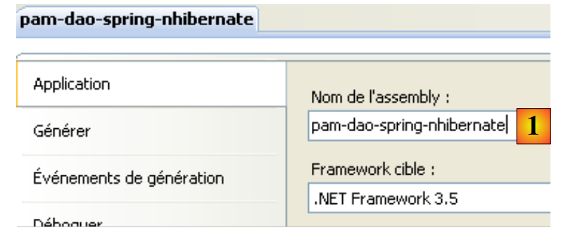
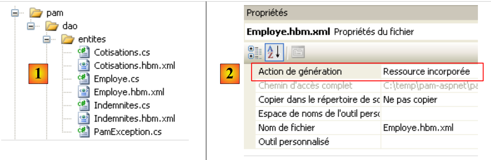
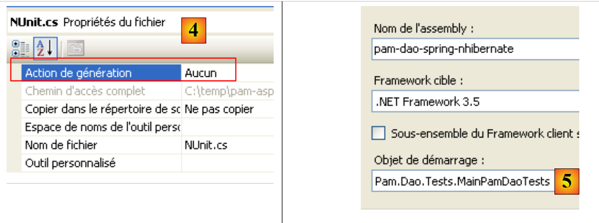

2. Spring / NHibernate Integration
The Spring framework provides utility classes for working with the NHibernate framework. Using these classes makes the code for accessing data from a SGBD easier to write. Consider the following multi-layer architecture:
 |
In the following, we will build a [dao] layer using [Spring / NHibernate] by commenting on the code of a working solution. We will not attempt to cover all possible configurations or uses of the [Spring / Nhibernate] framework. The reader can adapt the proposed solution to their own problems using the Spring.NET [Spring.NET | Homepage ] documentation (December 2011).
2.1. The [dao] data access layer
 |
The database is the MySQL [dbpam_nhibernate] database already presented in section 1.2. The [dao] layer implements the following C# interface:
using Pam.Dao.Entites;
namespace Pam.Dao.Service {
public interface IPamDao {
// list of all employee identities
Employe[] GetAllIdentitesEmployes();
// an individual employee with benefits
Employe GetEmploye(string ss);
// list of all cotisations
Cotisations GetCotisations();
}
}
2.1.1. The Visual Studio C# project for the [dao] layer
The Visual Studio project for the [dao] layer is as follows:
 |
- in [1], the project as a whole
- the [pam] folder contains the project classes as well as the configuration of the NHibernate entities
- The files [App.config] and [Dao.xml] configure the Spring framework / NHibernate. We will need to describe the contents of these two files.
- In [2], the various classes of the project
- in the [entites] folder, we find the NHibernate entities studied in the previous project (see page 14)
- In the [service] folder, we find the [IPamDao] interface and its implementation using the Spring framework / NHibernate [PamDaoSpringNHibernate].
- The [tests] folder contains the tests for the [IPamDao] interface.
- In [3], the project dependencies. The Spring integration / NHibernate requires new DLL and [4].
In the project's [3] references, the following DLL files are found:
- NHibernate: for ORM and NHibernate
- MySql.Data: the ADO driver.NET for SGBD MySQL 5
- Spring.Core: for the Spring framework, which handles layer integration
- log4net: a logging library
- nunit.framework: a unit testing library
- Spring.Aop, Spring.Data, and Spring.Data.NHibernate32: provide Spring support / NHibernate.
We will ensure that all these DLL have their "Local Copy" property set to True.
2.1.2. The C# project configuration
The project is configured as follows:
 |
- In [1], the project assembly name is [pam-dao-spring-nhibernate]. This name appears in various project configuration files.
2.1.3. Entities of the [dao] layer
 |
The entities (objects) required for the [dao] layer have been gathered in the [entites] [1] folder of the project. These entities are the same as those in the previous project (see section 1.3.2), with one exception found in the NHibernate configuration files. Take, for example, the [Employe.hbm.xml] file:
- In [2], the file is configured to be included in the project assembly
Its content is as follows:
<?xml version="1.0" encoding="utf-8" ?>
<hibernate-mapping xmlns="urn:nhibernate-mapping-2.2"
namespace="Pam.Dao.Entites" assembly="pam-dao-spring-nhibernate">
<class name="Employe" table="EMPLOYES">
<id name="Id" column="ID">
<generator class="native" />
</id>
<version name="Version" column="VERSION"/>
<property name="SS" column="SS" length="15" not-null="true" unique="true"/>
<property name="Nom" column="NOM" length="30" not-null="true"/>
<property name="Prenom" column="PRENOM" length="20" not-null="true"/>
<property name="Adresse" column="ADRESSE" length="50" not-null="true" />
<property name="Ville" column="VILLE" length="30" not-null="true"/>
<property name="CodePostal" column="CP" length="5" not-null="true"/>
<many-to-one name="Indemnites" column="INDEMNITE_ID" cascade="all" lazy="false"/>
</class>
</hibernate-mapping>
- Line 3: The assembly attribute indicates that the file [Employe.hbm.xml] will be found in the assembly [pam-dao-spring-nhibernate]
Additionally, in the [entites] folder, we find an exception class used by the project:
using System;
namespace Pam.Dao.Entites {
public class PamException : Exception {
// the error code
public int Code { get; set; }
// manufacturers
public PamException() {
}
public PamException(int Code)
: base() {
this.Code = Code;
}
public PamException(string message, int Code)
: base(message) {
this.Code = Code;
}
public PamException(string message, Exception ex, int Code)
: base(message, ex) {
this.Code = Code;
}
}
}
The [PamException] class was derived from the [Exception] class (line 4) to add an error code (line 7).
2.1.4. Spring Configuration / NHibernate
Let’s return to the Visual C# project:
 |
- In [1], the files [App.config] and [Dao.xml] configure the Spring / NHibernate integration
2.1.4.1. The [App.config] file
The [App.config] file is as follows:
<?xml version="1.0" encoding="utf-8" ?>
<configuration>
<!-- configuration sections -->
<configSections>
<sectionGroup name="spring">
<section name="parsers" type="Spring.Context.Support.NamespaceParsersSectionHandler, Spring.Core" />
<section name="objects" type="Spring.Context.Support.DefaultSectionHandler, Spring.Core" />
<section name="context" type="Spring.Context.Support.ContextHandler, Spring.Core" />
</sectionGroup>
<section name="log4net" type="log4net.Config.Log4NetConfigurationSectionHandler,log4net" />
</configSections>
<!-- spring configuration -->
<spring>
<parsers>
<parser type="Spring.Data.Config.DatabaseNamespaceParser, Spring.Data" />
</parsers>
<context>
<resource uri="Dao.xml" />
</context>
</spring>
<!-- This section contains the log4net configuration settings -->
<!-- NOTE IMPORTANTE: logs are not active by default. They must be activated by program
avec l'instruction log4net.Config.XmlConfigurator.Configure();
! -->
<log4net>
<appender name="ConsoleAppender" type="log4net.Appender.ConsoleAppender">
<layout type="log4net.Layout.PatternLayout">
<conversionPattern value="%-5level %logger - %message%newline" />
</layout>
</appender>
<!-- Set default logging level to DEBUG -->
<root>
<level value="DEBUG" />
<appender-ref ref="ConsoleAppender" />
</root>
<!-- Set logging for Spring. Logger names in Spring correspond to the namespace -->
<logger name="Spring">
<level value="INFO" />
</logger>
<logger name="Spring.Data">
<level value="DEBUG" />
</logger>
<logger name="NHibernate">
<level value="DEBUG" />
</logger>
</log4net>
</configuration>
The [App.config] file above configures Spring (lines 5–9, 15–22) and log4net (line 10, lines 28–53), but not NHibernate. Spring objects are not configured in [App.config] but in the file [Dao.xml] (line 20). The Spring configuration / NHibernate, which consists of declaring specific Spring objects, will therefore be found in this file.
2.1.4.2. The file [Dao.xml]
The file [Dao.xml], which contains the objects managed by Spring, is as follows:
<?xml version="1.0" encoding="utf-8" ?>
<objects xmlns="http://www.springframework.net"
xmlns:db="http://www.springframework.net/database">
<!-- Referenced by main application context configuration file -->
<description>
Application Spring / NHibernate
</description>
<!-- Database and NHibernate Configuration -->
<db:provider id="DbProvider"
provider="MySql.Data.MySqlClient"
connectionString="Server=localhost;Database=dbpam_nhibernate;Uid=root;Pwd=;"/>
<object id="NHibernateSessionFactory" type="Spring.Data.NHibernate.LocalSessionFactoryObject, Spring.Data.NHibernate32">
<property name="DbProvider" ref="DbProvider"/>
<property name="MappingAssemblies">
<list>
<value>pam-dao-spring-nhibernate</value>
</list>
</property>
<property name="HibernateProperties">
<dictionary>
<entry key="dialect" value="NHibernate.Dialect.MySQL5Dialect"/>
<entry key="hibernate.show_sql" value="false"/>
</dictionary>
</property>
<property name="ExposeTransactionAwareSessionFactory" value="true" />
</object>
<!-- transaction manager -->
<object id="transactionManager"
type="Spring.Data.NHibernate.HibernateTransactionManager, Spring.Data.NHibernate32">
<property name="DbProvider" ref="DbProvider"/>
<property name="SessionFactory" ref="NHibernateSessionFactory"/>
</object>
<!-- Hibernate Template -->
<object id="HibernateTemplate" type="Spring.Data.NHibernate.Generic.HibernateTemplate">
<property name="SessionFactory" ref="NHibernateSessionFactory" />
<property name="TemplateFlushMode" value="Auto" />
<property name="CacheQueries" value="true" />
</object>
<!-- Data Access Objects -->
<object id="pamdao" type="Pam.Dao.Service.PamDaoSpringNHibernate, pam-dao-spring-nhibernate" init-method="init" destroy-method="destroy">
<property name="HibernateTemplate" ref="HibernateTemplate"/>
</object>
</objects>
- Lines 11–13 configure the connection to the [dbpam_nhibernate] database. They include:
- the ADO.NET provider required for the connection, in this case the provider for SGBD and MySQL. This requires having DLL and [Mysql.Data] in the project references.
- the database connection string (server, database name, connection owner, password)
- Lines 15–29 configure the SessionFactory of NHibernate, the object used to obtain NHibernate sessions. Note that all database operations are performed within a NHibernate session. In line 15, we can see that SessionFactory is implemented by the Spring class Spring.Data.NHibernate.LocalSessionFactoryObject found in DLL Spring.Data.NHibernate32.
- Line 16: The DbProvider property sets the database connection parameters (ADO.NET provider and connection string). Here, this property references the DbProvider object defined earlier on lines 11–13.
- Lines 17–20: define the list of assemblies containing [*.hbm.xml] files that configure entities managed by NHibernate. Line 19 indicates that these files will be found in the project assembly. Note that this name is found in the C# project properties. Also note that all [*.hbm.xml] files have been configured to be included in the project assembly.
- Lines 22–27: Specific properties of NHibernate.
- Line 24: The SQL dialect used will be that of MySQL
- Line 25: The SQL output by NHibernate will not appear in the console logs. Setting this property to true allows you to see the SQL commands issued by NHibernate. This can help you understand, for example, why an application is slow when accessing the database.
- Line 28: Setting the ExposeTransactionAwareSessionFactory property to true will cause Spring to manage the transaction management annotations found in the C# code. We will return to this when we write the class implementing the [dao] layer.
- Lines 32–36 define the transaction manager. Again, this manager is a Spring class from the DLL Spring.Data.NHibernate32 package. This manager needs to know the database connection parameters (line 34) as well as the SessionFactory from NHibernate (line 35).
- Lines 39–43 define the properties of the HibernateTemplate class, which is also a Spring class. This class will be used as a utility class within the class that implements the [dao] layer. It facilitates interactions with NHibernate objects. This class has certain properties that must be initialized:
- line 40: the SessionFactory of NHibernate
- line 41: the TemplateFlushMode property sets the synchronization mode of the NHibernate persistence context with the database. The Auto mode ensures that synchronization occurs:
- at the end of a transaction
- before a SELECT operation
- Line 42: HQL queries (Hibernate Query Language) will be cached. This can lead to a performance gain.
- Lines 46–48 define the implementation class for the [dao] layer
- line 46: the [dao] layer will be implemented by the [PamdaoSpringNHibernate] class of the DLL [pam-dao-spring-nhibernate]. After the class is instantiated, the class’s init method will be executed immediately. When the Spring container is closed, the class’s destroy method will be executed.
- Line 47: The [PamDaoSpringNHibernate] class will have a HibernateTemplate property that will be initialized with the HibernateTemplate property from line 39.
2.1.5. Implementation of the [dao] layer
2.1.5.1. The skeleton of the implementation class
The [IPamDao] interface is as follows:
using Pam.Dao.Entites;
namespace Pam.Dao.Service {
public interface IPamDao {
// list of all employee identities
Employe[] GetAllIdentitesEmployes();
// an individual employee with benefits
Employe GetEmploye(string ss);
// list of all cotisations
Cotisations GetCotisations();
}
}
- line 1: we import the namespace of the entities from the [dao] layer.
- line 3: the layer [dao] is in the namespace [Pam.Dao.Service]. Elements in the [Pam.Dao.Entites] namespace can be created in multiple instances. Elements in the [Pam.Dao.Service] namespace are created as a single instance (singleton). This is what justified the choice of namespace names.
- Line 4: The interface is named [IPamDao]. It defines three methods:
- Line 6: [GetAllIdentitesEmployes] returns an array of objects of type [Employe], which represents the list of child care providers in a simplified form (last name, first name, SS).
- line 8, [GetEmploye] returns a [Employe] object: the employee with the social security number passed as a parameter to the method, along with the allowances associated with their index.
- Line 10, [GetCotisations] returns the object [Cotisations], which encapsulates the rates of the various social security contributions to be deducted from the gross salary.
The skeleton of the implementation class for this interface using Spring / NHibernate could be as follows:
using System;
using System.Collections;
using System.Collections.Generic;
using Pam.Dao.Entites;
using Spring.Data.NHibernate.Generic.Support;
using Spring.Transaction.Interceptor;
namespace Pam.Dao.Service {
public class PamDaoSpringNHibernate : HibernateDaoSupport, IPamDao {
// private fields
private Cotisations cotisations;
private Employe[] employes;
// init
[Transaction(ReadOnly = true)]
public void init() {
...
}
// delete object
public void destroy() {
if (HibernateTemplate.SessionFactory != null) {
HibernateTemplate.SessionFactory.Close();
}
}
// list of all employee identities
public Employe[] GetAllIdentitesEmployes() {
return employes;
}
// an individual employee with benefits
[Transaction(ReadOnly = true)]
public Employe GetEmploye(string ss) {
....
}
// cotisations list
public Cotisations GetCotisations() {
return cotisations;
}
}
}
- Line 9: The [PamDaoSpringNHibernate] class correctly implements the [dao] and [IPamDao] layer interfaces. It also derives from the Spring class [HibernateDaoSupport]. This class has a property [HibernateTemplate] that is initialized by the Spring configuration that was set up (line 2 below):
<object id="pamdao" type="Pam.Dao.Service.PamDaoSpringNHibernate, pam-dao-spring-nhibernate" init-method="init" destroy-method="destroy">
<property name="HibernateTemplate" ref="HibernateTemplate"/>
</object>
- In line 1 above, we see that the definition of the [pamdao] object specifies that the init and destroy methods of the [PamDaoSpringNHibernate] class must be executed at specific times. These two methods are indeed present in the class on lines 16 and 21.
- Lines 15, 34: annotations that ensure the annotated method will be executed within a transaction. The attribute ReadOnly=true indicates that the transaction is read-only. The method executed within the transaction may throw an exception. In this case, Spring automatically rolls back the transaction. This annotation eliminates the need to manage a transaction within the method.
- Line 16: The init method is executed by Spring immediately after the class is instantiated. We will see that its purpose is to initialize the private fields on lines 11 and 12. It will run within a transaction (line 15).
- The methods of the [IPamDao] interface are implemented on lines 28, 35, and 40.
- Lines 28–30: The [GetAllIdentitesEmployes] method simply sets the attribute in line 12, which was initialized by the init method.
- Lines 40–42: The [GetCotisations] method simply returns the attribute from line 11, which was initialized by the init method.
2.1.5.2. Useful methods of the HibernateTemplate class
We will use the following methods of the HibernateTemplate class:
executes the query HQL and returns a list of objects of type T | |
executes a HQL query parameterized by ?. The values of these parameters are provided by the array of objects. | |
returns all entities of type T |
There are other useful methods that we won’t have the opportunity to use, which allow you to retrieve, save, update, and delete entities:
adds the entity of type T with primary key id to the NHibernate session. | |
inserts (INSERT) or updates (UPDATE) the entity object depending on whether it has a primary key (UPDATE) or not (INSERT). The absence of a primary key can be configured via the unsaved-values attribute in the entity's configuration file. After the SaveOrUpdate operation, the entity object is in the NHibernate session. | |
deletes the entity object from session NHibernate. |
2.1.5.3. Implementation of the init method
The init method of the [PamDaoSpringNHibernate] class is, by configuration, the method executed after Spring instantiates the class. Its purpose is to cache the simplified employee identities (last name, first name, SS) and the rates of cotisations in local memory. Its code could be as follows.
[Transaction(ReadOnly = true)]
public void init() {
try {
// retrieve the simplified list of employees
IList<object[]> lignes = HibernateTemplate.Find<object[]>("select e.SS,e.Nom,e.Prenom from Employe e");
// we put it in a table
employes = new Employe[lignes.Count];
int i = 0;
foreach (object[] ligne in lignes) {
employes[i] = new Employe() { SS = ligne[0].ToString(), Nom = ligne[1].ToString(), Prenom = ligne[2].ToString() };
i++;
}
// we put the cotisations rates in a
cotisations = (HibernateTemplate.LoadAll<Cotisations>())[0];
} catch (Exception ex) {
// we transform the exception
throw new PamException(string.Format("Erreur d'accès à la BD : [{0}]", ex.ToString()), 43);
}
}
- Line 5: A HQL query is executed. It retrieves the SS, Last Name, and First Name fields from all Employee entities. It returns a list of objects. If we had requested the entire Employee record in the form "select e from Employee e", we would have retrieved a list of objects of type Employee.
- Lines 7–12: This list of objects is copied into an array of objects of type Employee.
- Line 14: We request the list of all entities of type Cotisations. We know that this list has only one element. We therefore retrieve the first element of the list to obtain the rates for cotisations.
- Lines 7 and 14 initialize the class’s two private fields.
2.1.5.4. Implementation of the GetEmploye method
The GetEmploye method must return the Employee entity with a given SS number. Its code could be as follows:
[Transaction(ReadOnly = true)]
public Employe GetEmploye(string ss) {
IList<Employe> employés = null;
try {
// request
employés = HibernateTemplate.Find<Employe>("select e from Employe e where e.SS=?", new object[]{ss});
} catch (Exception ex) {
// we transform the exception
throw new PamException(string.Format("Erreur d'accès à la BD lors de la demande de l'employé de n° ss [{0}] : [{1}]", ss, ex.ToString()), 41);
}
// has an employee been recovered?
if (employés.Count == 0) {
// we report the fact
throw new PamException(string.Format("L'employé de n° ss [{0}] n'existe pas", ss), 42);
} else {
return employés[0];
}
}
- line 6: retrieves the list of employees with a given SS number
- line 12: normally, if the employee exists, we should get a list with one element
- line 14: if this is not the case, an exception is thrown
- line 16: if that is the case, returns the first employee in the list
2.2. [dao] Layer Tests
2.2.1. The Visual Studio project
The Visual Studio project has already been presented. To recap:
 |
- in [1], the project as a whole
- in [2], the various classes of the project. The [tests] folder contains a console test [Main.cs] and a unit test [NUnit.cs].
- In [3], the program [Main.cs] is compiled.
 |
- In [4], the file [NUnit.cs] is not generated.
- The project is a console application. The class being executed is the one specified in [5], the class in the [Main.cs] file.
2.2.2. The console test program [Main.cs]
The test program [Main.cs] is executed in the following architecture:
 |
It is responsible for testing the methods of the [IPamDao] interface. A basic example might be the following:
using System;
using Pam.Dao.Entites;
using Pam.Dao.Service;
using Spring.Context.Support;
namespace Pam.Dao.Tests {
public class MainPamDaoTests {
public static void Main() {
try {
// instantiation layer [dao]
IPamDao pamDao = (IPamDao)ContextRegistry.GetContext().GetObject("pamdao");
// list of employee identities
foreach (Employe Employe in pamDao.GetAllIdentitesEmployes()) {
Console.WriteLine(Employe.ToString());
}
// an employee with benefits
Console.WriteLine("------------------------------------");
Console.WriteLine(pamDao.GetEmploye("254104940426058"));
Console.WriteLine("------------------------------------");
// cotisations list
Cotisations cotisations = pamDao.GetCotisations();
Console.WriteLine(cotisations.ToString());
} catch (Exception ex) {
// exception display
Console.WriteLine(ex.ToString());
}
//break
Console.ReadLine();
}
}
}
- line 11: Spring is asked for a reference to the [dao] layer.
- lines 13–15: testing the [GetAllIdentitesEmployes] method of the [IPamDao] interface
- line 18: testing the [GetEmploye] method of the [IPamDao] interface
- line 21: test of the [GetCotisations] method of the [IPamDao] interface
Spring, NHibernate, and log4net are configured by the file [App.config] , discussed in section 2.1.4.1.
Running the program with the database described in section 1.2 produces the following console output:
- lines 1-2: the 2 employees of type [Employe] with the sole information [SS, Nom, Prenom]
- line 4: the employee of type [Employe] with social security number [254104940426058]
- line 5: the rates for cotisations
2.2.3. Unit tests with NUnit
We will now move on to a unit test for NUnit. The Visual Studio project for the [dao] layer will evolve as follows:
 |
- to [1], the test program [NUnit.cs]
- to [2,3], the project will generate a DLL named [pam-dao-spring-nhibernate.dll]
- in [4], the reference to DLL from the NUnit framework: [nunit.framework.dll]
- to [5], the class [Main.cs] will not be included in DLL [pam-dao-spring-nhibernate]
- to [6], class [NUnit.cs] will be included in DLL [pam-dao-spring-nhibernate]
The test class NUnit is as follows:
using System.Collections;
using NUnit.Framework;
using Pam.Dao.Service;
using Pam.Dao.Entites;
using Spring.Objects.Factory.Xml;
using Spring.Core.IO;
using Spring.Context.Support;
namespace Pam.Dao.Tests {
[TestFixture]
public class NunitPamDao : AssertionHelper {
// the [dao] layer to be tested
private IPamDao pamDao = null;
// manufacturer
public NunitPamDao() {
// instantiation layer [dao]
pamDao = (IPamDao)ContextRegistry.GetContext().GetObject("pamdao");
}
// init
[SetUp]
public void Init() {
}
[Test]
public void GetAllIdentitesEmployes() {
// audit no. of employees
Expect(2, EqualTo(pamDao.GetAllIdentitesEmployes().Length));
}
[Test]
public void GetCotisations() {
// check cotisations rate
Cotisations cotisations = pamDao.GetCotisations();
Expect(3.49, EqualTo(cotisations.CsgRds).Within(1E-06));
Expect(6.15, EqualTo(cotisations.Csgd).Within(1E-06));
Expect(9.39, EqualTo(cotisations.Secu).Within(1E-06));
Expect(7.88, EqualTo(cotisations.Retraite).Within(1E-06));
}
[Test]
public void GetEmployeIdemnites() {
// individual verification
Employe employe1 = pamDao.GetEmploye("254104940426058");
Employe employe2 = pamDao.GetEmploye("260124402111742");
Expect("Jouveinal", EqualTo(employe1.Nom));
Expect(2.1, EqualTo(employe1.Indemnites.BaseHeure).Within(1E-06));
Expect("Laverti", EqualTo(employe2.Nom));
Expect(1.93, EqualTo(employe2.Indemnites.BaseHeure).Within(1E-06));
}
[Test]
public void GetEmployeIdemnites2() {
// non-existent individual verification
bool erreur = false;
try {
Employe employe1 = pamDao.GetEmploye("xx");
} catch {
erreur = true;
}
Expect(erreur, True);
}
}
}
- line 11: the class has the attribute [TestFixture], which makes it a [NUnit] test class.
- line 12: the class derives from the utility class AssertionHelper of the NUnit framework (starting with version 2.4.6).
- Line 14: The private field [pamDao] is an instance of the [dao] layer access interface. Note that the type of this field is an interface, not a class. This means that the [pamDao] instance makes only methods accessible—specifically, those of the [IPamDao] interface.
- The methods tested in the class are those with the [Test] attribute. For all these methods, the testing process is as follows:
- The method with the [SetUp] attribute is executed first. It is used to prepare the resources (network connections, database connections, etc.) required for the test.
- Then the method to be tested is executed
- and finally, the method with the attribute [TearDown] is executed. It is generally used to release the resources allocated by the method with the attribute [SetUp].
- In our test, there are no resources to allocate before each test and then deallocate afterward. Therefore, we do not need methods with the attributes [SetUp] and [TearDown]. For the example, we have presented, in lines 23–26, a method with the attribute [SetUp].
- Lines 17–20: The class constructor initializes the private field [pamDao] using Spring and [App.config].
- Lines 29–32: Test the method [GetAllIdentitesEmployes]
- lines 35-42: test the [GetCotisations] method
- lines 45-53: test the [GetEmploye] method
- lines 56-65: test the [GetEmploye] method when an exception occurs.
Project generation creates DLL and [pam-dao-spring-nhibernate.dll] in the [bin/Release] folder:
 |
We load DLL and [pam-dao-spring-nhibernate.dll] using the [NUnit-Gui] and version 2.5 tools and run the tests:

The tests above were successful.
2.2.4. Generating and DLL from the [dao] layer
Once the [PamDaoNHibernate] class has been written and tested, we will generate DLL from the [dao] layer as follows:
 |
- [1], test programs are excluded from the project build
- [2,3], project configuration
- [4], project generation
- DLL is generated in the [bin/Release] [5] folder.